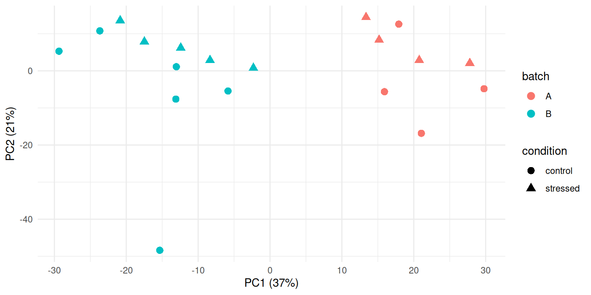
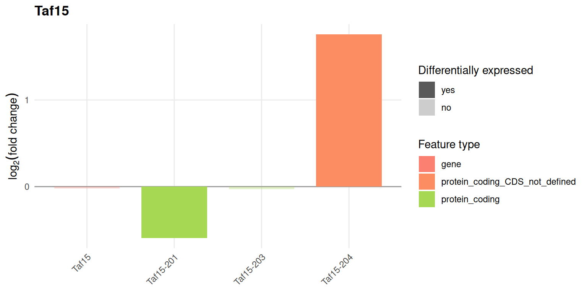
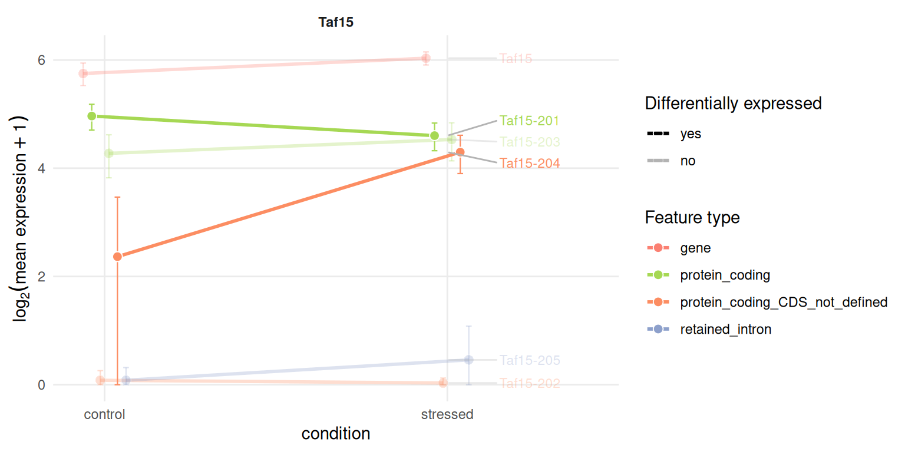
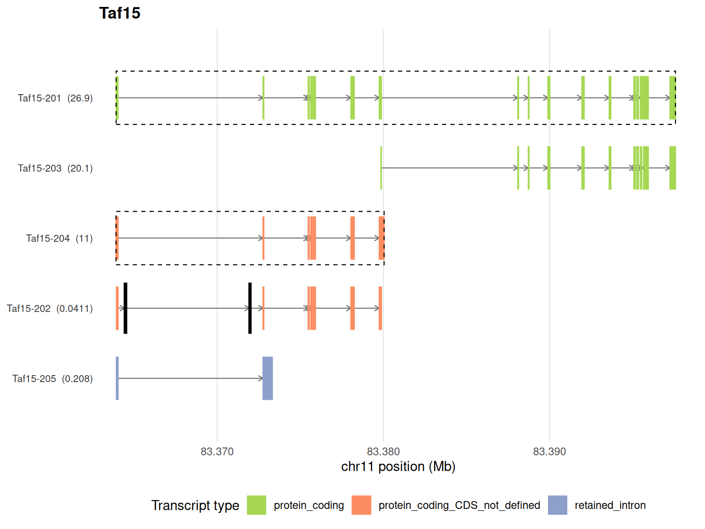
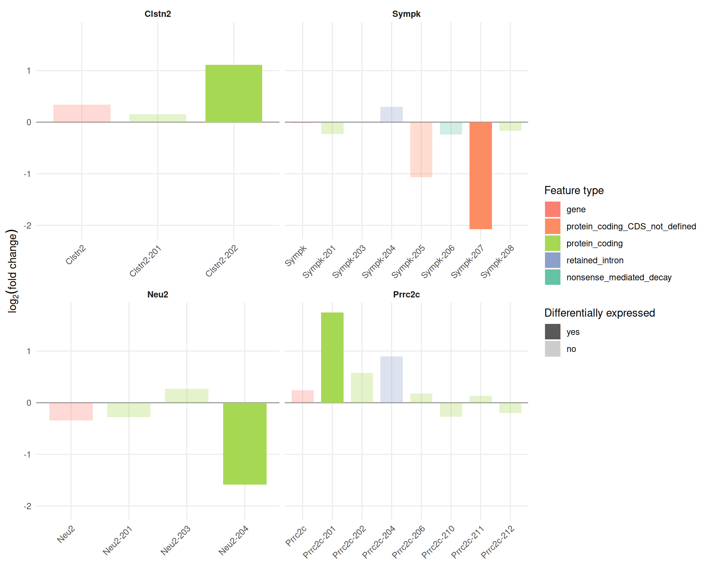
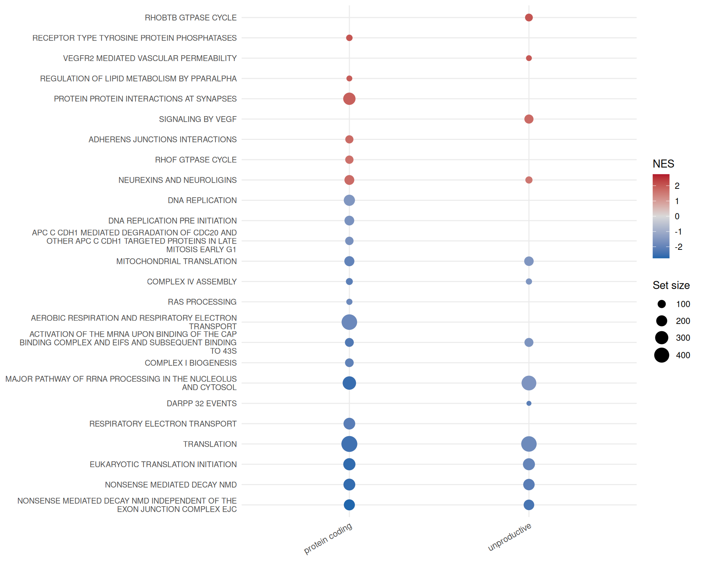

library(isoformic)
library(dplyr)
library(ggplot2)
data_dir <- "data/mouse_bnst"
iso <- read_isoformic(data_dir)
iso
#> <IsoformicExperiment> mouse_bnst
#> annotation : gencode_vm38_chr_patch_hapl_scaff_annotation_gff3_case_study_subset (20,720 genes, 135,433 transcripts, 4,443 exons)
#> samples : 19 [condition, batch, replicate, run]
#> transcripts: 538 assayed from 47 genes
#> assays : abundance, counts
#> gene assays: derived from transcript assays on demand
#> DE results : det (58,661 transcripts), deg (20,720 genes)
#> on disk : /home/runner/work/isoformic/isoformic/vignettes/articles/data/mouse_bnst
col_data(iso)
#> # A tibble: 19 × 5
#> sample_id condition batch replicate run
#> <chr> <chr> <chr> <int> <chr>
#> 1 control_1 control B 1 SRR24948951
#> 2 control_2 control B 2 SRR24948952
#> 3 control_3 control B 3 SRR24948953
#> 4 control_4 control B 4 SRR24948954
#> 5 control_5 control B 5 SRR24948955
#> 6 control_6 control B 6 SRR24948940
#> 7 control_7 control A 7 SRR24948935
#> 8 control_8 control A 8 SRR24948931
#> 9 control_9 control A 9 SRR24948925
#> 10 control_10 control A 10 SRR24948928
#> 11 stressed_1 stressed B 1 SRR24948948
#> 12 stressed_2 stressed B 2 SRR24948949
#> 13 stressed_3 stressed B 3 SRR24948950
#> 14 stressed_4 stressed B 4 SRR24948943
#> 15 stressed_5 stressed B 5 SRR24948942
#> 16 stressed_6 stressed A 6 SRR24948930
#> 17 stressed_7 stressed A 7 SRR24948929
#> 18 stressed_8 stressed A 8 SRR24948932
#> 19 stressed_9 stressed A 9 SRR24948927Case study: chronic stress in the mouse brain
November 9, 2026
Source:vignettes/articles/isoformic-case-mouse-stress.qmd
This article applies isoformic to a complete public dataset: bulk RNA-seq of the anterodorsal bed nucleus of the stria terminalis (adBNST) of male mice after six weeks of chronic variable mild stress, against unstressed controls [Degroat et al. (2024); BioProject PRJNA984605]. It shows a common outcome of transcript-level analysis: stress leaves the expression of genes almost unchanged, but changes which of their isoforms are expressed.
The data
The 19 male samples (10 control, 9 stressed) were quantified with Salmon (Patro et al. 2017) against the GENCODE vM38 transcripts (Frankish et al. 2018), with the GRCm39 genome as decoy and 30 Gibbs draws per sample. Transcripts were tested with swish (Zhu et al. 2019) on the inferential replicates and genes with DESeq2 on the summed counts. The scripts that download the reads from SRA and run every step are in data-raw/case_studies/ of the package repository.
The result is an IsoformicExperiment saved with write_isoformic(). It keeps the complete differential expression tables (every tested transcript and gene) but the expression assays and exon structures only of a panel of 47 genes, so that it fits in the repository; it is not installed with the package.
Checking the samples first
A principal component analysis of the gene-level counts shows that the first component does not separate the conditions but two groups of samples, one per range of SRA run accessions. The groups are not annotated in GEO but are most likely two processing batches; they are balanced between conditions (4 + 4 and 6 + 5 samples), so the tests can adjust for them: swish stratifies its permutations by batch and DESeq2 uses the design ~ batch + condition. Without the adjustment, no transcript and no gene reaches a false discovery rate of 10%.
pca <- read_parquet(fs::path(data_dir, "sample_pca.parquet")) |>
left_join(col_data(iso), by = "sample_id")
ggplot(pca, aes(PC1, PC2, color = batch, shape = condition)) +
geom_point(size = 3) +
labs(
x = sprintf("PC1 (%.0f%%)", 100 * pca$var_PC1[1]),
y = sprintf("PC2 (%.0f%%)", 100 * pca$var_PC2[1])
) +
theme_minimal()
The sample far below the others on the second component (control_3) has the smallest library (18.6 million read pairs) and the lowest mapping rate (71%); it is kept in the analysis, but it is the first sample to look at when a result depends on a single animal.
Genes barely change, isoforms do
iso@metadata[c("transcript_de", "gene_de")]
#> $transcript_de
#> [1] "swish (fishpond), 30 inferential replicates, stratified by batch"
#>
#> $gene_de
#> [1] "DESeq2, apeglm-shrunken log2 fold changes, design ~ batch + condition"
deg <- de_gene(iso)
det <- de_tx(iso)
c(
genes_tested = nrow(deg),
genes_fdr_5 = sum(deg$qvalue < 0.05, na.rm = TRUE),
transcripts_tested = nrow(det),
transcripts_fdr_5 = sum(det$qvalue < 0.05, na.rm = TRUE)
)
#> genes_tested genes_fdr_5 transcripts_tested transcripts_fdr_5
#> 20720 4 58661 137At a false discovery rate of 5%, DESeq2 finds 4 genes and swish 137 transcripts. Many of the transcript changes are moderate, so this article lowers the fold-change cutoff of the significance calls from the default of 1 to 0.5 (a 1.4-fold change):
de_cutoffs(iso) <- list(log2fc = 0.5, pvalue = 0.05, use_fdr = TRUE)The significant transcripts are not only protein coding isoforms: about a third are retained intron, nonsense-mediated decay, other non-coding isoforms of protein coding genes or lncRNAs.
det |>
filter(qvalue < 0.05) |>
left_join(tx_annot(iso), by = "transcript_id") |>
count(transcript_type, sort = TRUE)
#> # A tibble: 6 × 2
#> transcript_type n
#> <chr> <int>
#> 1 protein_coding 89
#> 2 retained_intron 24
#> 3 protein_coding_CDS_not_defined 11
#> 4 nonsense_mediated_decay 7
#> 5 lncRNA 4
#> 6 TEC 2isoform_switches() relates the two levels. Almost every gene with significant isoforms has no significant change of its total expression (det_not_deg): a gene-level analysis would miss all of them.
switches <- isoform_switches(iso)
table(switches$switch_type)
#>
#> consistent det_not_deg opposite_direction
#> 1 88 1
switches |>
select(gene_name, n_det_up, n_det_down, det_sig_types, gene_log2FC, switch_type) |>
head(10)
#> # A tibble: 10 × 6
#> gene_name n_det_up n_det_down det_sig_types gene_log2FC switch_type
#> <chr> <int> <int> <chr> <dbl> <chr>
#> 1 Taf15 1 1 protein_coding;protein… -0.0193 opposite_d…
#> 2 Atrx 2 0 retained_intron 0.0334 det_not_deg
#> 3 Rbm39 2 0 retained_intron 0.0315 det_not_deg
#> 4 Tspoap1 0 1 protein_coding 0.00976 det_not_deg
#> 5 Sympk 0 1 protein_coding_CDS_not… -0.0210 det_not_deg
#> 6 Atp5f1b 0 1 protein_coding_CDS_not… -0.0379 det_not_deg
#> 7 Ptk2b 0 1 protein_coding -0.0238 det_not_deg
#> 8 Atp2a2 1 0 protein_coding 0.0266 det_not_deg
#> 9 Prrc2c 1 0 protein_coding 0.240 det_not_deg
#> 10 Sez6 0 1 nonsense_mediated_decay 0.00178 det_not_degAn isoform switch in Taf15
Taf15 encodes an RNA-binding protein of the FET family. Its total expression does not change, but its protein coding isoform Taf15-201 goes down while Taf15-204, a transcript without a coding sequence, goes up: a switch from a productive to an unproductive isoform.
plot_log2fc(iso, feature = "Taf15")
The expression profile shows the same switch in transcripts per million:
plot_tx_expr(iso, gene_name = "Taf15", group = "condition")
and the genomic context shows the structures of the isoforms, with the differentially expressed ones outlined:
plot_genomic_context(iso, gene_name = "Taf15")
More genes with isoform-level changes
The other panel genes show the same pattern: one or two significant isoforms in genes whose total does not move.
plot_log2fc(iso, feature = c("Clstn2", "Sympk", "Neu2", "Prrc2c"), ncol = 2)
The genes chosen for the first analysis of this dataset by the isoformic authors (Trip12, Meg3 and Map4) and classic stress response genes such as Fkbp5 and Sgk1 do not reach a false discovery rate of 5% once the batches are taken into account:
det |>
left_join(tx_annot(iso), by = "transcript_id") |>
filter(gene_name %in% c("Trip12", "Meg3", "Map4", "Fkbp5", "Sgk1")) |>
summarise(best_qvalue = min(qvalue), .by = gene_name)
#> # A tibble: 5 × 2
#> gene_name best_qvalue
#> <chr> <dbl>
#> 1 Meg3 0.0932
#> 2 Trip12 0.0516
#> 3 Sgk1 0.321
#> 4 Map4 0.111
#> 5 Fkbp5 0.313Enrichment by transcript type
The package directory holds the mouse Reactome pathways of MSigDB (Liberzon et al. 2015) restricted to those with 15 to 500 tested genes. run_enrichment() ranks the transcripts by fold change and runs the enrichment separately for the protein coding isoforms and for the unproductive ones.
genesets <- read_gmt(fs::path(data_dir, "genesets.gmt"))
set.seed(42)
enrichment <- run_enrichment(iso, genesets, pval_cutoff = 0.05)
table(enrichment$experiment)
#>
#> nonsense_mediated_decay protein_coding
#> 27 132
#> protein_coding_CDS_not_defined retained_intron
#> 34 77
#> unproductive
#> 109
plot_enrichment(
enrichment,
n = 25,
experiments = c("protein_coding", "unproductive"),
nes_cutoff = 1.5
)
Translation, ribosome biogenesis and respiration pathways go down in the protein coding isoforms of the stressed animals, while synaptic pathways (protein interactions at synapses, neurexins and neuroligins, transmission across chemical synapses) go up. The translation pathways go down in the unproductive isoforms of the same genes as well. The ribosomal protein genes also dominate the nonsense-mediated decay pathways of Reactome, which is why those appear as well; that pathway name describes the genes, not the transcript type.
Citing isoformic
If you use isoformic in publications, please cite Mamede et al. (2025); citation("isoformic") prints the reference.
Session information
sessionInfo()
#> R version 4.6.2 (2026-10-29)
#> Platform: x86_64-pc-linux-gnu
#> Running under: Ubuntu 26.04.1 LTS
#>
#> Matrix products: default
#> BLAS: /usr/lib/x86_64-linux-gnu/openblas-pthread/libblas.so.3
#> LAPACK: /usr/lib/x86_64-linux-gnu/openblas-pthread/libopenblasp-r0.3.32.so; LAPACK version 3.12.0
#>
#> locale:
#> [1] LC_CTYPE=C.UTF-8 LC_NUMERIC=C LC_TIME=C.UTF-8
#> [4] LC_COLLATE=C.UTF-8 LC_MONETARY=C.UTF-8 LC_MESSAGES=C.UTF-8
#> [7] LC_PAPER=C.UTF-8 LC_NAME=C LC_ADDRESS=C
#> [10] LC_TELEPHONE=C LC_MEASUREMENT=C.UTF-8 LC_IDENTIFICATION=C
#>
#> time zone: UTC
#> tzcode source: system (glibc)
#>
#> attached base packages:
#> [1] stats graphics grDevices utils datasets methods base
#>
#> other attached packages:
#> [1] ggplot2_4.0.3 dplyr_1.2.1 isoformic_0.1.3
#>
#> loaded via a namespace (and not attached):
#> [1] Matrix_1.7-6 gtable_0.3.6 jsonlite_2.0.0
#> [4] compiler_4.6.2 Rcpp_1.1.2 tidyselect_1.2.1
#> [7] parallel_4.6.2 scales_1.4.0 BiocParallel_1.46.0
#> [10] yaml_2.3.12 fastmap_1.2.0 lattice_0.23-1
#> [13] R6_2.6.1 labeling_0.4.3 generics_0.1.4
#> [16] knitr_1.52 ggrepel_0.9.8 tibble_3.3.1
#> [19] DBI_1.3.0 pillar_1.11.1 RColorBrewer_1.1-3
#> [22] rlang_1.3.0 fastmatch_1.1-8 utf8_1.2.6
#> [25] xfun_0.62 fs_2.1.0 S7_0.2.2
#> [28] otel_0.3.0 cli_3.6.6 withr_3.0.3
#> [31] magrittr_2.0.5 digest_0.6.39 grid_4.6.2
#> [34] fgsea_1.38.0 cowplot_1.2.0 lifecycle_1.0.5
#> [37] vctrs_0.7.3 data.table_1.18.6.1 evaluate_1.0.5
#> [40] glue_1.8.1 farver_2.1.2 duckdb_2.0.0
#> [43] codetools_0.2-20 rmarkdown_2.32 tools_4.6.2
#> [46] pkgconfig_2.0.3 htmltools_0.5.9References
Degroat, Thomas J., Kimberly Wiersielis, Katherine Denney, et al. 2024. “Chronic Stress and Its Effects on Behavior, RNA Expression of the Bed Nucleus of the Stria Terminalis, and the M-current of NPY Neurons.” Psychoneuroendocrinology 161: 106920. https://doi.org/10.1016/j.psyneuen.2023.106920.
Frankish, A, GENCODE-consoritum, and P Flicek. 2018. “GENCODE reference annotation for the human and mouse genomes.” Nucleic Acids Research, ahead of print. https://doi.org/10.1093/nar/gky955.
Liberzon, Arthur, Chet Birger, Helga Thorvaldsdóttir, Mahmoud Ghandi, Jill P. Mesirov, and Pablo Tamayo. 2015. “The Molecular Signatures Database (MSigDB) Hallmark Gene Set Collection.” Cell Systems 1 (6): 417–25. https://doi.org/10.1016/j.cels.2015.12.004.
Mamede, Izabela, Lucio R. Queiroz, Carlos Mata-Machado, et al. 2025. “Isoformic: A Workflow for Transcript-Level RNA-seq Interpretation.” NAR Genomics and Bioinformatics 7 (4): lqaf176. https://doi.org/10.1093/nargab/lqaf176.
Patro, R, G Duggal, MI Love, RA Irizarry, and C Kingsford. 2017. “Salmon Provides Fast and Bias-Aware Quantification of Transcript Expression.” Nature Methods 14: 417–19. https://doi.org/10.1038/nmeth.4197.
Zhu, A, A Srivastava, JG Ibrahim, R Patro, and MI Love. 2019. “Nonparametric expression analysis using inferential replicate counts.” Nucleic Acids Research 47: e105. https://doi.org/10.1093/nar/gkz622.